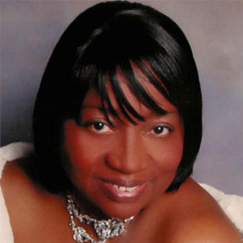
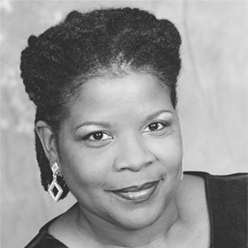
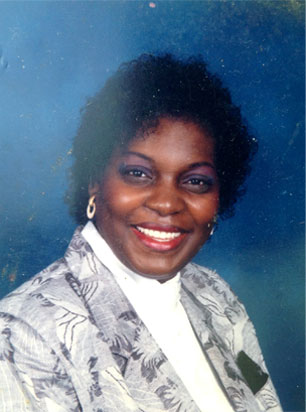
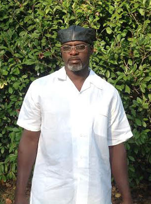
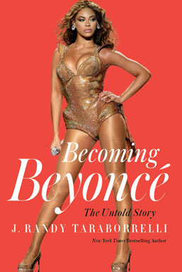

With my latest book, Becoming Beyoncé, I sought to give full credit to the unsung heroes of Beyoncé Knowles-Carter’s record-breaking career, those who sacrificed behind the scenes to help an unassuming youngster from Houston, Texas realize her greatest ambitions and biggest dreams. Of course, obvious acclaim is due the woman herself, Beyoncé, for without her drive, focus and determination -- not to mention her uncanny ability as a singer, dancer and actress -- there is simply no way she would ever have become the preeminent singer, dancer and actress she is today. But if it takes a village to raise a child, it certainly takes at least that much to raise a superstar.
Here, then, are some of the people who sacrificed a good part of their lives for Beyoncé, who believed with everything they had in them that this kid from Texas had what it took to become a major star. Prior to being interviewed for Becoming Beyoncé, most of these people never before told their stories. I am proud to now introduce them to you, my readers, for these truly are the unsung heroes of Beyoncé career.
Of course, Beyoncé father, Mathew Knowles, has to be on the top of any list of those who have contributed to Beyoncé success. With no background whatsoever in show business, Mathew took over management of Beyoncé’s career when she was just a child ... and look what he did for her! Not only did he take Destiny’s Child to the very pinnacle of show business success, he did the same for Beyoncé as a solo artist.
This father-daughter partnership is surely one of the most successful in show business history. Mathew’s business savvy can not be easily explained – in fact, it took an entire book for me to do it! Read about Mathew in Becoming Beyoncé ... and be inspired.
As I wrote in my book, Beyoncé was about six when she first sang for her mother, Tina, in the family's kitchen. At the time, Tina had been worried about Beyoncé’s interaction with school mates. "Sometimes in the black community, it's the lighter girls who are really picked on," she explained. "Of course, the opposite is often true as well, sadly: the darker girls are also picked on. I would go to get her at school and Beyoncé would just be pushing the swing by herself with no one on it." Tina recalled. "I remember, I once asked this little girl in the school playground, 'Why don't you like Beyoncé?' and she got very flippant with me and said, 'I just don't like her!' I thought, oh my Lord! What am I gonna do about this?" It was Tina’s decision to enroll Beyoncé in dance classes as a way of socializing her.
When a dance teacher realized that the youngster also had singing ability, she incorporated her into a community program. It was then that Beyoncé was discovered by ...

Deborah Laday and Denise Seals
It’s been my great honor as a biographer to tell the complete stories of Deborah Laday and Denise Seals. Both women are truly unsung heroes in the sense that, like most of the sources in Becoming Beyoncé, they had never before been interviewed. These enterprising women discovered Beyoncé singing at The Evelyn Rubenstein Jewish Community Center in Houston at the age of eight. Both working mothers with children of their own, the business partners had an idea to form a girls group, which they wanted to call Girls Tyme. They auditioned kids from all over the Houston area in search of youngsters who could not only sing and dance but who also had charisma and personality. After seeing Beyoncé sing at the Community Center, the two women approached Mathew and Tina to compliment them on their daughter’s talent. It was then that they met the young prodigy for the first time.
In short order, they auditioned her for a plumb role in their group and... the rest is history. I welcome the opportunity to formally recognize Deborah and Denise, here. Of course, without them, Beyoncé still might have become famous. But it was because of them that her story unfolded just as it did. (It should also be mentioned that Denise Seals was Beyoncé very first vocal coach!)
Harlon “Keith” Bell
“You have to see these girls, Ann,” Harlon Bell – better known as “Keith” - told his friend, Andretta Tillman. “I just checked them out at the Sharpstown Mall [in Houston]. They are so good I've decided to teach them some routines.”
“But how good can they be?” Andretta asked. “They’re just kids, right?”
“That’s what makes them so incredible,” Keith explained. “And they have this girl named Beyoncé. She’s wild, Ann. You won’t believe it when you see her.”
“How old is she?”
"I don’t know. Eight or nine?”
“Oh my God,” Andretta exclaimed. “Eight or nine? I don’t know, Keith. That is really young.”
It was the summer of 1990 when Keith Bell tried to sell Andretta Tillman on the idea of investing in the all-girls revue formed by Denise Seals and Deborah Laday. “When Denise and Debra started D&D Management, I became their in-house choreographer,” he recalls. “I was just this young and determined kid dancer anxious to help them make things happen.” And he made things happen not only for himself, but for Beyoncé. Giving credit where credit is due, Keith went on to become Beyoncé’s first choreographer!

Andretta Tillman
Without a doubt, one of the most important figures in the professional career of Beyoncé Knowles is a woman has gone largely unrecognized: Andretta Brown Tillman. Popular and well-known in her community, only a few close friends of hers, such as her most trusted confidante, Brian Kenneth Moore - known as "Kenny" - knew the truth about "Ann," as many of her friends called her. "Sometimes it took every bit of strength she could muster just to get through the day," said Kenny. "She' suffered personal and unspeakable tragedies." Andretta, who was raising two boys - Armon and Chris – was battling lupus disease. Despite the ravages of this progressive disease, she somehow managed to take the reigns of Girls Tyme from Deborah and Denise to then coach the group (which ultimately became Destiny's Child) to its first level of success. One of my intentions with Becoming Beyoncé was to make certain that Andretta be recognized and acknowledged for everything she did - all of the sacrifices she made - not only for Beyoncé, but for all of the youngsters she so beautifully mentored in her short but fulfilling lifetime.

Lornanda “To-to” Brown
When To-to (who is one of Andretta Tillman’s brothers) was young, he started a group called Tayste, four singers in the tradition of Boyz II Men. He soon convinced his sister to put a little money behind Tayste just to see how far she could take them as a manager. It was at around this time that Andretta began working with Beyoncé and Girls Tyme. In the book, To-to has a funny, early memory of a nine-year-old Beyoncé Knowles. “Me and my group, we’d be rehearsing, right? And this little kid, Beyoncé, would be sitting and watching and taking notes,” recalled To-to. “And I was like, ‘What’s up with that?’ Then, when I would hear her rehearse with Girls Tyme, sure enough, she had my vocal licks down pat, I mean, perfect. I told the guys, ‘Man, that little kid over there, that one on the end, she’s stealing from us! We’d ask her, ‘Beyoncé, why are you always here when we’re practicing? Go find your own group.’ And she would look at me innocently and say, ‘But I’m just watchin’. I ain’t doin’ nothin’.’ But, oh yeah,” To-to concluded with a laugh, “she was doin’ something, all right.”
I owe a great debt of gratitude to To-to for it was from him and the Tillman Estate that I licensed quite a few archival photographs for use in my book (including the photo of Beyoncé on the back jacket.) He’s a special gentleman I’m honored to have gotten to know through my work on Becoming Beyoncé.
Girls Tyme (Beyonce in the background)
Alonzo (”Lonnie”) Jackson
The concept Debra and Denise originally had in mind for their so-called all-girls revue was a solid and entertaining one, but it was also a little unwieldy. There was a "hype-master," there were dancers and there were singers. Some were good. Some, maybe, not so good. Andretta thought the package needed to be paired down and fine-tuned and since she was now the act’s primary investor, she had latitude to do what she felt was best. That's where Alonzo Jackson came into the picture.
Alonzo – who everyone knew as “Lonnie” - was a young and ambitious writer and producer from East Oakland, California. Immensely talented, he describes himself at the time as having been, "21-years-old and hungry as hell, having only been in Houston for a short time. I was producing local talent and also acting as an engineer there. I was creative and eager to be heard. Part of what I wanted to do with Beyonce was teach her where she came from, the context of the business she was becoming a part of. We watched a lot of Michael Jackson videos for instance. I wanted her to know the history of black entertainment, and also understand the responsibility she would have to take it to the next level with pride, respect and dignity." Lonnie would go on to produce most of the songs Girls Tyme would record in their early days, and would co-write many of them, as well with....
Anthony "Tony Mo" Moore
To work with him for the benefit of Girls Tyme, Lonnie recruited his good friend, Anthony Moore, a very talented, young songwriter who everyone knew as "Tony Mo." In Becoming Beyoncé Lonnie said of Tony Mo, "We ended up being good friends and great collaborators. We fed off each other, me doing the music, him doing the lyrics. It was a good marriage." In fact, Tony would write the lyrics to most of the songs recorded by Girls Tyme, including tunes like "Blue Velvet," on which a young Beyoncé Knowles honed the syncopation style that would later become her personal trademark. "Yeah, that was me," says the self-effacing Tony Mo. "I wrote 'Blue Velvet' especially for Bey. I remember thinking, "I want to write a song for her that's so sassy and so quick with the tongue, you'll have to listen back on it and ask, 'What the heck did she just say?' Because it was just that quick, so in the pocket. Even as a child, Beyoncé had an uncanny ability to tackle the most complicated songs.”
Getting to know the very talented Tony Mo - another unsung hero in Beyoncé’s life - through the pages of Becoming Beyoncé promises to be a real treat for the reader.
All of Destiny’s Child diehard fans have a special place in their hearts for LaTavia Roberson. She’s not exactly an “unsung hero” in the sense that she most certainly has made her mark on the entertainment history. However, she’s someone I’m sure my readers will enjoy becoming better acquainted with in the pages of Becoming Beyoncé. As she explains in the book, it was when Denise and Deborah were auditioning girls for their revue that LaTavia first laid eyes on Beyoncé. “That’s when I met her for the first time,” LaTavia recalls. “There were lines and lines of girls, all of us sitting together waiting to sing, dance, rap, and do whatever we could do to convince these ladies [Debra and Denise] to work with us.”
LaTavia and Beyoncé were just eight when they met. Even at that age, Beyoncé was laser-focused on one goal: all she wanted to do was sing. For instance, Debra and Denise had recently aligned themselves with Pro-Line’s Soft & Beautiful products, a leading hair care line for girls of color. The company wanted to audition LaTavia for a national TV and print advertising campaign. Rather than single out her own daughter, LaTavia’s mother, Cheryl Mitchell, felt that all of the group members should audition. “So we piled into a fifteen-passenger van and went to Dallas to meet with the Pro-Line executives,” LaTavia recalled. The girls were pretty excited about auditioning, all of them, that is, except maybe for Beyoncé. “It’s just not what I want to do,” she said. She wanted to be a singer and that was the end of it for her, at least back then. (Incidentally, the ultra-photogenic LaTavia was eventually hired for the Pro-Line job and would become the popular face of that company for the next ten years.)
LaTavia, as she explains in the book, was let go from Destiny's Child when she and LeToya Luckett decided they wanted management other than Beyoncé’s father, Mathew. One of the reasons LaTavia’s story is so important is because it shows that standing in one's truth sometimes comes with a price, but it’s still always worth it. Today, LaTavia has her own hair/beauty line and is also an advocate for breast cancer awareness. Not only does she still write songs and own her own music publishing company, she is currently working on a memoir.

The first comprehensive biography ever published about America's favorite living pop icon, Beyoncé, from New York Times bestselling biographer J. Randy Taraborrelli.
Beyoncé Knowles is a woman who began her career at the age of eight performing in pageant shows and talent contests, honing her craft through her teenage years until, at the age of 16, she had her first number one record with Destiny's Child. That hit-making trio launched Beyoncé's successful solo career, catapulting her, as of 2014, to #1 on Forbes annual list of most wealthy celebrities--the same year she made the cover of Time. Becoming Beyoncé is not only the story of struggle, sacrifice, and what it takes to make it in the cut-throat record industry, it's the story of the great rewards of such success and the devastating toll it often takes on the human spirit.
Nicki and Nina - who are LaTavia Roberson's cousins - were also members of Girls Tyme. Because these talented sisters had never been interviewed prior to Becoming Beyoncé, it’s my great honor to tell their stories now. Nicki relates a great story about what happened when Usher wanted to play Truth or Dare with the girls in Atlanta. Beyoncé was 12. “It was Truth or Dare with one boy and six girls, so you know where this was headed,” she says, laughing. “It was harmless at first. He dared my sister, Nicki, to kiss him on one cheek. Then LaTavia had to kiss him on the other. But then it was Beyoncé’s turn, and her dare was..." (You’ll have to read the book to get the rest of that story!) "We love Beyoncé and are so proud of her success," says Nina. "She was so dedicated, but also such a good friend. We miss her. But we have so many great memories of those days when we all shared the stage as Girls Tyme." If you really want to know about the foundation of Beyoncé’s success, look no further than these two lovely sisters.
Christopher and Armon Tillman
"Time to eat," Tina Knowles would say as she carried a large platter of gumbo from the kitchen to the dining room table. It would be just another Sunday at the Knowleses’ and, as usual, the members of the Tillman family were guests. Seated around the table would be Mathew, Beyoncé, Solange and Kelly Rowland, as well as Andretta Tillman and her sons, Armon and Chris. "With the girls practicing at our house every day of the week, and then with us at Tina's and Mathew's every weekend, it was like we were one big happy family," Armon recalled. “Mathew and I would go out to his basketball court to play one-on-one and, man, was he ever competitive! Usually older guys will give a kid a break, you know? Not Mathew. He played hard and he played to win, even if he was playing against me, a ninth grader. In months to come, we would have a lot of talks. He was so interesting to me. You had to hand it to him because he was a black man living the American Dream, making lots of money and raising a family in a big ol' house.”
It wasn't all fun and games for the Tillman boys, though, especially given their mother’s courageous fight against Lupus. Also, their father, Dwight, and baby sister, Shauna, had been tragically killed in a car accident years earlier. Still, the Tillmans were a close-knit family and, once Girls Tyme came into their lives, it was as if they had a new lease on life. "My mother gave her all for the group," said Christopher who, along with Armon, was interviewed for the first time in Becoming Beyoncé. "I hope that after this book people will be able to see how important my mom was to Girls Tyme and Destiny’s Child and the vital role she played in Beyoncé’s success. We’re so proud of Beyoncé. We always knew she was the real deal."
Brian "Kenny" Moore
Kenny was not only Andretta Tillman’s business partner, he was also her very close friend. A very good story in Becoming Beyoncé has to do with Girls Tyme's recording session for "Blue Velvet" on October 10, 1991, the song written by Tony Mo. Kenny recalls that Ashley Davis - the original lead singer - as having a difficult time in the studio with it. Repeatedly, she worked on perfecting the melody, but with little success. Meanwhile, he says that as he and Beyoncé sat on the other side of the glass booth waiting for Ashley to finish, he couldn’t help but notice how fidgety Beyoncé was in her chair. She just wanted to get the session over with, especially if all she was going to do was just sit and watch. "Well, do you think you can sing it better?" Kenny asked her. "Yes, Mr. Kenny," she answered, "I sure do." He studied her for a moment and realized that she wasn't kidding: she believed she could nail the song. Kenny then suggested that they put Beyoncé in the studio and give her a shot. Of course, Beyoncé knocked it out of the ball park ... and the rest of the story is what Becoming Beyoncé is all about!
“It may surprise people to know that Beyoncé has had only two relationships in her life...”
It may surprise people to know that Beyoncé has had only two relationships in her life: Lyndall Locke and Jay Z. One of the most beloved characters in Becoming Beyoncé is, without a doubt, Lyndall. I will always treasure the many hours spent with Lyndall as he told stories he never before revealed. There are so many heartwarming anecdotes about his ten-year romance with Beyoncé, one is hard pressed to choose one over another. Back in the day, Lyndall was just a young guy who brought great humor into the life of a very serious girl who was totally devoted to her career … and also to him. For readers of the book, what resonates most about Lyndall’s story is the experience of his journey as he watches the young country girl with whom he fell in love transform into one of the greatest superstars of our time. Not surprisingly, there was no shortage of emotional moments between him and Beyoncé, as well as between him and her protective parents. Though the changes they underwent because of the rapid ascension of Beyoncé’s star took them quite by surprise, they survived it all with good humor and great love for one another. Today, Lyndall Locke is in a happy relationship, raising a son, Lyndall Jr. The many years he spent with Beyoncé – their first kiss, their prom, their many fun times and more than a few lovers’ spats - are now memorialized forever in the pages of Becoming Beyoncé.
Dawn "Sha Sha" Daniels
Sha Sha was Andretta Tillman's loyal assistant. In Becoming Beyoncé, she tells this great story:
Once, Sha Sha and Beyoncé – who was about 12 - were at Andretta's home watching Tyra Banks being interviewed on television. "Aunt Sha Sha, do I have to compete against her?" Beyoncé asked.
"Against Tyra Banks?"
"Yeah, against her," Beyoncé answered.
"Of course not, Beyoncé, she's not even in your age range," Sha Sha said.
"But she's so beautiful. I can't compete against that," Beyoncé fretted.
"Tyra is a model, you're a singer," Sha Sha told the young girl. "But besides that, you don't have to compete with anybody. You're gonna be a big star. So, stop comparing yourself to others. Think you can do that?" she asked.
Beyoncé smiled up at her friend. "Yes," she said, nodding her head. "That, I can do."
Sha Sha not only had a huge influence on the young Beyoncé, she is also the girl who picked LeToya Luckett's photograph out of a binder of resumes as the replacement for Ashley Davis in Girls Tyme. LeToya, of course, would go on to become a very popular member of Destiny’s Child.
Belfrey Brown
Belfrey Brown, Andretta Tillman's nephew, was a tremendous help to her in her effort to get Girls Tyme off the ground, often lending her large sums of money. "We would do whatever we had to do," he recalled in the first interview he ever gave. "We believed in all of the girls, but especially in Beyoncé who we all knew was an amazing talent. So, yes, if they needed money, they'd come to me.” Belfrey has so many funny and heartwarming stories in Becoming Beyoncé, it’s difficult to settle on only one. Your best bet would be to pick up the book, go to the index, look up "Belfrey Brown" … and enjoy! (Oh, and be sure to read about the practical joke Beyoncé and the girls played on him in a shopping mall back in the day!)
Arne Frager
Arne was the executive from the Plant Studios in Sausalito, California who contacted Andretta to offer to first record Girls Tyme. The Plant Studios — formerly known as the Record Plant — was one of the most famous studios in the country. Stevie Wonder, Fleetwood Mac, Prince, Sly Stone, and pretty much every major recording artist had at one time or another recorded there. Be sure to read Becoming Beyoncé for Arne's never-before-told stories of his work with a ten-year-old Beyoncé Knowles. "I'm happy to have had my little part in her story," he says. "My work with her was at the foundation of her career. I saw her as immensely talented in the studio, a little kid who could pretty much do it all."
Few sources in Becoming Beyoncé affect the reader like Kim, a woman whose beauty is only exceeded by her talent. She was Beyoncé’s vocal coach during the Destiny’s Child years. Kim tells so many great stories in the book, but this one is one of my favorites: One night around the year 2000, she and Beyoncé were in a hotel room when Beyoncé began to talk about a new guy she’d just begun dating. “This man has a sweet and kind heart,” Beyoncé told Kim. “He comes from a place of such compassion.” Kim recalled, “As I was listening to her talking about him, I sat there thinking, okay, you know what? This man is going to be her husband. Just seeing that sparkle in her eye, I knew something wonderful was unfolding in her life. I remember thinking it was such a blessing for her, such a gift to have finally found the man she would marry. I think he was opening up her heart in a way she didn’t know was possible.” That man? Jay Z.
Photo of young Destiny's Child
Daryl Simmons
In 1993, Beyoncé and the girls got their first record deal, thanks to Daryl Simmons. By this time, the group had changed its name from Girls Tyme to Somethin’ Fresh and then to The Dolls. After being forced to shed two of its members, Nicki and Nina, they were signed to Elektra Records. Unfortunately, the songs they recorded for the label, which Daryl produced, were never released. After about two years of very hard work, the group was dropped from the company! The whole story, a roller coaster of emotion, is detailed in Becoming Beyoncé for the first time. “They were really a mess, all of them, when the label dropped them,” Daryl recalled, “and, man, I felt so terrible. It was just business, but try explaining that to a bunch of eager fourteen-year-olds. I thought, Wow, for their whole lives, it must seem like adults have been screwing with them. All of the decisions made for them had been made by grown-ups with a vested interest in the outcome, and they just have to deal with it.’ I could see the way it had worn them down.” Indeed, the road to becoming Beyoncé was often paved with bitter disappointment. Many years later, as Daryl recounts in the book, Beyoncé would ask him to assist her with her popular HBO documentary, “Life is But a Dream.” Their touching reunion in 2011 is another of the more emotional stories told exclusively to the reader by Daryl in Becoming Beyoncé.
8Bit (Rob Fusari)
One of the more fascinating characters in Becoming Beyoncé is the talented producer and writer, 8Bit (whose real name is Rob Fusari). It was 8Bit who wrote and co-produced Destiny Child’s first hit, “No, No, No.” He then went on to work with Beyoncé and the girls on many more memorable recordings, such as “Bootylicious,” which he co-wrote with the lady, herself. “I had never even been in a recording studio before ‘No, No, No,’” 8Bit explained. “So I was freaking out. I was like, ‘Woah! This is too much!’ Then Beyoncé and the girls walked in and I got a good look at them and I thought, ‘Okay, now. How the hell old are these girls? Fifteen? Sixteen?’ Despite their youth, though, I could see right off that they were all business. No small talk, no nothin’ … just Beyoncé saying, ‘Hello, everyone, let’s get to work.’” Readers will enjoy the behind-the-scenes, nuts-and-bolts look at many of the great Destiny’s Child recordings, courtesy of 8Bit. Of course, he has produced many other great artists as well, most notably, Lady GaGa. (But, personally, I think he’ll always be known for “Bootylicious.”) An extremely prolific writer and producer, I’m very excited to have had 8Bit’s participation in Becoming Beyoncé.
Chad Elliot
Chad Elliot has the distinction of being the first person to co-write a hit with Beyoncé. But, as he explains in the book, it was all the result of a mistake! For the girls' second album, Elliott sent Mathew Knowles a bunch of songs for consideration — musical tracks with no vocals. By mistake, the CD he submitted contained a song called “The Ambush Crew.” Mathew loved the track and gave it to Beyoncé. After sitting with it for a few days, she wrote lyrics to what she would then call “Jumpin’ Jumpin’.” “So I get this song back from Mathew one day with these new lyrics,” Chad recalled. “I was freaking out because we never intended to send that song to him. It was a tune I was working on for a personal project. But when I heard the new lyrics, I was blown away. I was like, ‘Whoa! What the heck is this? How did this happen?’ I called Mathew right away and explained to him that the track had been submitted by accident.” But Mathew said he felt Beyoncé’s lyrics took the song to a whole new level.” Of course, Chad had to agree. Thus it came to pass that “Jumpin’ Jumpin’” - on Destiny's Child's second album, The Writing's on the Wall -- would hold the distinction of being the very first one credited to Beyoncé as co-writer and co-producer. Chad – who went on to become VP of A&R at Sony - has many more fascinating stories (some even about Jay Z), told for the first time in Becoming Beyoncé. Be sure to check them out…
D’Wayne Wiggins
It was around 1995 that Lonnie Jackson’s childhood friend, D’Wayne Wiggins, (the founding member of the popular R&B group Tony! Toni! Toné!) had his date with Destiny's Child. D’Wayne had seen the girls perform years earlier when they were still Girls Tyme, but had lost track of them. “Some years later, I happened to be at Lonnie’s house and saw a picture of them on the wall,” he recalled. “I asked Lonnie, ‘Hey! Whatever happened to that group? They were dope!’ A couple weeks later, Lonnie called and said, ‘Remember those girls you were asking about? They’re having a problem with their deal at Elektra. The whole thing fell apart. Now, their management wants to talk to you.’” D’Wayne contacted Mathew Knowles, and Mathew sent him a tape. After one listen, D'Wayne called Mathew. “Brother, these ain’t no little girls,” D’Wayne told him. “You must have sent me the wrong tape. I know what little girls sound like, and they sure don’t sound like this!” Soon after, D'Wayne would become very instrumental in arranging for Destiny’s Child to sign with Columbia/Sony... and we all know what happened after that!
Photo of adult Destiny's Child
Taura Stinson
Taura Stinson co-wrote (along with D'Wayne Wiggins) the very first Destiny's Child release, "Killing Time." The song would be issued on the soundtrack to Men in Black on Columbia/Sony. In Becoming Beyoncé, Taura recalls Beyoncé’s “saving for a rainy day” phase, when she was about 20. While the two good friends were shopping for new clothes in the Galleria mall in Houston, Beyoncé walked into the Christian Dior store and began admiring a floor-length tutu. Its cost was $2,200. “That is really cute,” Taura told her. “You could wear it with a leather jacket! The contrast would be crazy!” Beyoncé studied the dress critically. “But can I afford this?” she asked. “I mean, two thousand dollars? There’s no way I can afford this dress,” she decided as she carefully put it back on the rack. Taura laughed. “Girl, how many hit records have you had?” she asked her. “Please! Of course you can afford that dress.” Beyoncé’s mind was made up, though. No dress. “I just have to be more sensible than that,” concluded the woman who is today, thirteen years later, worth about a half billion dollars. “I have enjoyed every second of my friendship with Beyoncé,” says Taura Stinson today. “Her father also became a very good friend of mine, and still is to this day.”
Robert Townsend
In a book that recounts all of the "firsts" in the life of Beyoncé Knowles Carter, the acclaimed actor, comedian, film director and writer Robert Townsend most certainly has a rightful place. After all, he was Beyoncé’s first film director, in the MTV presentation of Carmen - A Hip Hopera back in 2000 when she was just 19. Robert’s story of Beyoncé first screen kiss - and what it took to make her comfortable with the idea - is priceless. He came to understand that, at the time, Beyoncé seductive video and stage performances were all smoke and mirrors. The truth was that not only did she have no real acting experience, she seemed a little short on life experience too. “But she was a gladiator throughout the entire production,” Townsend concluded. “When the dailies started coming in, the MTV guys said, ‘She’s never acted before? Are you sure? Because she’s just so damn good!’”
Billy B (Billy Brasfield)
The much-acclaimed Billy B. was one of Beyoncé’s great makeup artists. The stories he shared of his time with her and Destiny's Child show a side of the superstar that has never before been revealed. He also has quite a few deeply considered observations about Beyoncé’s relationships with Lyndall Locke and Jay Z. Perhaps his best story though is the one about what it took to prepare Beyoncé for the video shoot of the song, "Listen" from Dreamgirls. What she did to look her best is something I think most women would never dream of doing! Be sure to read all about it and Billy B’s other terrific stories in Becoming Beyoncé.
Sharen Davis
Sharen Davis was responsible for many of the sensational costumes Beyoncé wore in Dreamgirls. In Becoming Beyoncé, Sharen recalls meeting with Beyoncé and Tina for the first time. “I had racks of clothes for them to see,” she remembered. “They were very interested in learning the process. Obviously, they had a lot of experience in fashion, but they didn’t try to assert themselves. They were open to new ideas, and asked about my inspirations. While I did look to the Supremes for inspiration, I didn’t take as much from them as one might think. The Supremes were actually quite conservative in their wardrobe. I wanted a more provocative look, so I looked at 1970s-era Cher as my biggest muse. Her clothes were sexy yet classy, which is what I wanted for Beyoncé.” Truly, it's the behind-the-scenes people, like Sharen Davis, who are the real unsung heroes in the lives of most high-profile entertainers.
Dan Workman
SugarHill Recording Studios in Houston is one of the world’s oldest (along with Abbey Road Studios in London) and, arguably, most famous studios in the world. Record producer and engineer Dan Workman is the president and CEO of the operation. Many people don’t know that Destiny's Child recorded some of their biggest hits there. Dan recalled the first time he heard her sing, when Beyoncé was about 18. “Within five minutes, I realized, ‘Okay, this is not just some teenager trying to be a singer. This is a real vocalist.’ You could tell she knew her way around a studio. The way she intuitively used the microphone and asked for criticism showed a level of professionalism far beyond her years. While it felt a little weird having a teenager drive the session, she was so good I was blown away by the whole thing." Among Dan's many anecdotes in the book are the behind-the-scenes stories about the memorable recording session for "Bootylicious," which he calls "a real crucible moment for me and Beyoncé." It’s great reading!